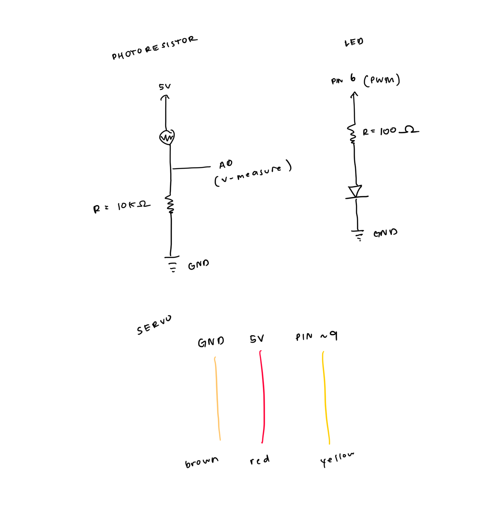
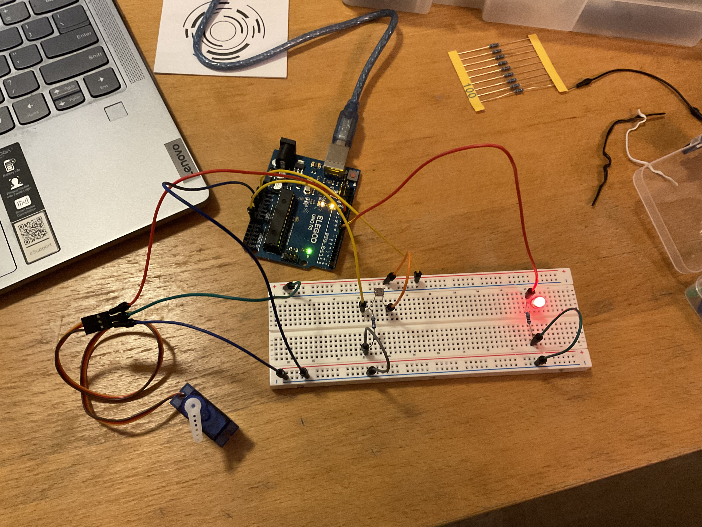

You will create a schematic, circuit, and code that uses parts
from your kit that require a library (e.g. the remote control,
capacitive touch, or the servo motor), and includes both an input
part (sensor, e.g. capacitive touch) and an output part
(actuator, e.g. servo). Your schematic description should label
all connections. You have to justify why you are using the values
you chose in your code and what those values are corresponding
to in your circuit! In your firmware, *if* you're using
analogRead(), you must write some code that calibrates your
sensor readings. Document your project on your webpage.
Schematic
Document your schematic (as an image)

Circuit
Document your circuit (as an image)

Code Snippet
// include Servo library to control the servor motor
#include <Servo.h>>
// create a servo object to control the servo motor
Servo Servo1;
Circuit Operation
Document your circuit (as an animated gif)
Questions
1 : Say you are using a servo motor you attach to pin 9. In your
loop() you have the following code :
void loop() {
for (pos = 0; pos <= 180; pos += 1) {
myservo.write(pos);
delay(100);
}
}
Draw a graph with the x - axis as time and the y
- axis as voltage at pin 9 with respect to ground.
I think it can be either one. Since the direction of the voltage
changes but the drop in voltage stays the same.
2 : Your input device is slightly broken,
leading it to give us an erroneous reading 1
% of the time.How can we address this
? Answer in(pseudo) code.
3: Your input device is slightly noisy,
leading the measurement to randomly deviate from the
true measurement up or down by 10
%.How can we address this
? Answer in(pseudo) code.
2: Draw a graph where the x-axis is time and the y-axis is
voltage. Plot the voltage at V-measure (where your pin is
reading the voltage) of your voltage divider of your shared
gif/video.
3: AnalogWrite and analogRead are respectively 8-bit and 10-bit
values. Imagine you had 10-bit PWM and a 16-bit analog-to-digital
converter instead. How would this change your map() code?
Explain your answer.
Right now, my map() code is
int brightness = map(sensorValue, sensorMin, sensorMax, 255, 0);
With a 16-bit ADC and 10-bit PWM, it would probably become:
map(sensorValue, sensorMin, sensorMax, 1023, 0);
4: Did you use AI tools in completing this assignment
? If yes,
please provide details on how / when,
as well as a brief reflection.If you used an LLM,
please
'share' your conversation and include it as part of your submission,
or cite the prompt(s) you used and the output.If no,
you can either leave this question blank,
or provide other information if you'd like.